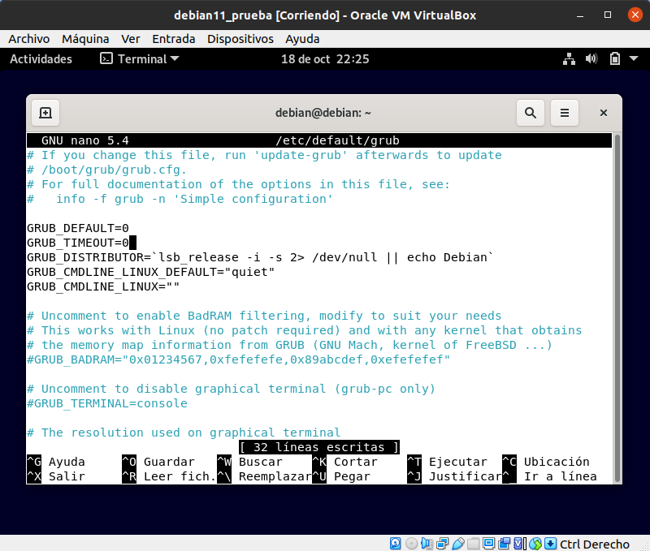

En esta parte del proyecto vamos a hablar de como realizar un arranque seguro en nuestro entorno Linux, concretamente hemos utilizado Debian 11 para ello. A continuación explicaremos cada uno de los apartados más importantes que hemos estudiado hasta el momento para segurizar nuestro equipo.
A diferencia de los siguientes apartados, en este todas las modificaciones y configuraciones se realizan durante la instalacion de nuestro SO, por lo que vamos a adjuntar algunas imagenes de como cifrar las particiones de nuestro sistema.
A continuación crearemos un grupo de volúmenes cifrados y crearemos tantos volúmenes lógicos como particiones cifradas querramos, en nuestro ejemplo quedaría tal que así.
Posteriormente le daremos un punto de montaje a cada una de ellas y unos permisos de montaje para que queden de la siguiente manera.
Para proteger el arranque del equipo mediante una contraseña podemos editar el archivo de configuración que se encuentra en /etc/grub.d/40_custom y dejarlo de la siguiente manera.
Recuerda que tras la modificación del fichero tendremos regenerar el fichero para que se establezcan los cambios. Esto se realiza con el siguiente comando: sudo update-grub
Otra opción es también editar los permidos del archivo de configuración de GRUB 2 para que solo pueda ser editado por el root, lo cual se realiza con comando: sudo chmod 700 /etc/grub.d/40_custom
Para este apartado, tendremos que modificar el fichero por defecto del grub, podemos apreciar en la imagen de arriba a que nos referimos, y bastaría con modificar el parámetro GRUB_TIMEOUT=0, nos lo encontraremos =5.

Una vez guardemos el archivo y salgamos del editor tendremos quew volver a actualizar los cambios en el grub introduciendo el comando sudo update-grub
Para este paso haremos uso de la herramienta dd para copiar la configuración del grub en un documento txt.
Una vez que ejecutamos el comando sabiendo donde se encuentra la configuración del GRUB y donde queremos esta copia vamos a comprobar que realmente se crea dicho fichero.
Este fichero lo podremos utilizar si en algún momento nuestra configuración del GRUB se ve modificada y queremos volver a la configuración que teniamos en dicha copia.